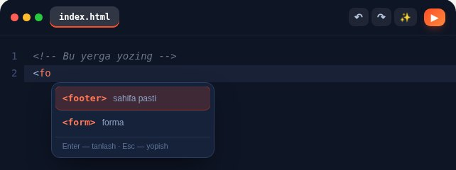
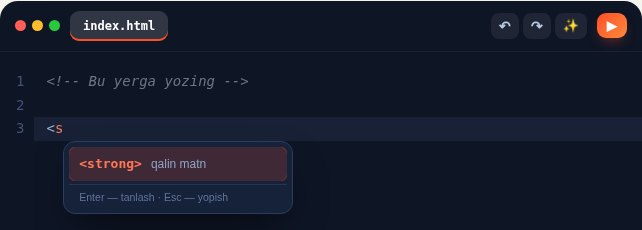
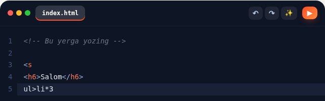
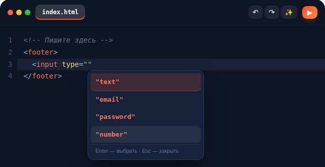
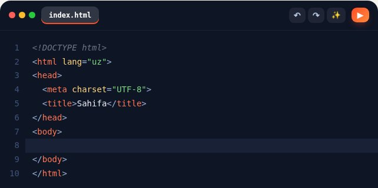
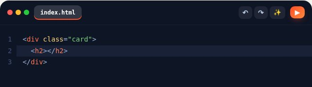
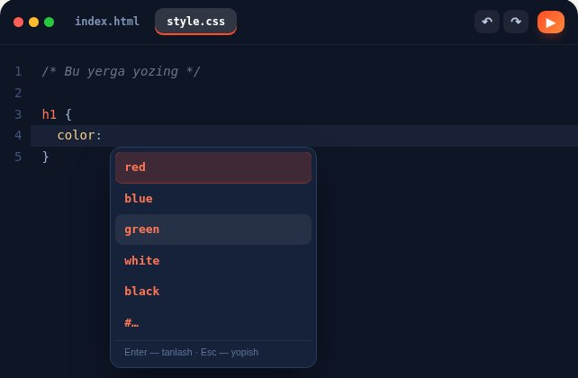
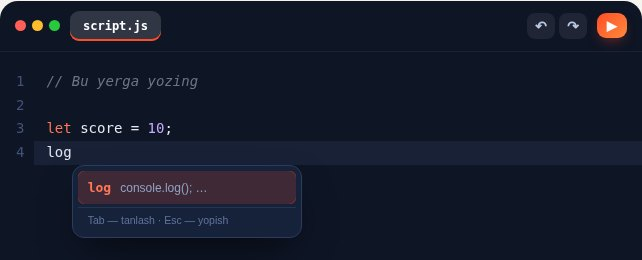
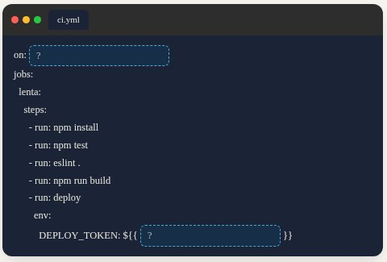

Reja bo'yicha 1–4-bosqich bajarildi: teglar xaritasi, HTML-CSS-JS maslahatlari, S12/S13, paket. Kodga tegishdan oldin yozilgan 149 holatli sinov va LMS CSS bilan olingan suratlar pastda. Yuklash va commit sizning buyrug'ingiz bilan.
Sinab ko'rish uchun QA sayti: coddycamp-kompilyator.vercel.app (5 dars, LMS emas).
HTML 114 · CSS 14 · JS 21. Har teg uchun «yozsam chiqadimi, Tab yoyadimi» avtomatik, Enter/Tab, Emmet, eski ishlar regressiyasi.
uz+ru ochilish 176/176 · md5 88/88 · katalog 70/70 · LMS sinf-to'qnashuvi 0 ta buzadigan.
uz 1365 + ru 1365 ekran, 88 fayl. 18 uyga vazifa signali avvalgidek soxta (boshqa ildiz-element).



li*3 esa hali ishlamaydi" width="642" height="200">


h2 + Tab" width="642" height="180">


| Tekshiruv | Natija |
|---|---|
| Avto-sinov (kompilyator, 149 holat) | 149 ✓ · pageerror 0 |
| Darvozalar: kompilyator, 12 dars fayli, FullPipeline | 8/9 · emoji/tell qizili HEAD bilan aynan bir xil (eski qarz) · lint:jsx 0 · lint-teg-royxat ✓ |
| 31 ta kompilyator ishlatadigan dars (5/6-Modul 4 tasi ham) | esbuild 31/31 · smoke:lms «Hammasi ishlaydi» |
| Paket: uz+ru ochilish · md5 · katalog | 176/176 · 88/88 · 70/70 |
| LMS sinf-to'qnashuvi (tuzatilgan vosita) | 75 moslik, buzadigani 0 (code-line yo'qoldi) |
| Har ekranni bosib-yurish, uz | 88 fayl · 1365 ekran · xato 0 (18 hw soxta signal) |
| Har ekranni bosib-yurish, ru | 88 fayl · 1365 ekran · xato 0 |
Yo'lda topilgan soxta bug: surat vositasida Tab ikki marta bosilar ekan (menga tegishli xato, vosita tuzatildi). Kompilyatorda bunday bug yo'q, 40 daqiqa shunga ketdi. Jurnalda yozilgan.
Hali tanlanmadi.